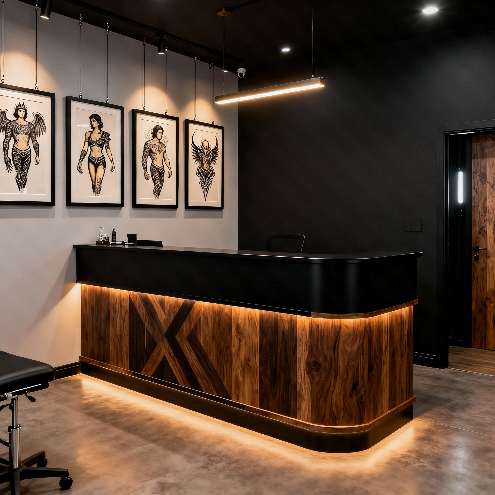
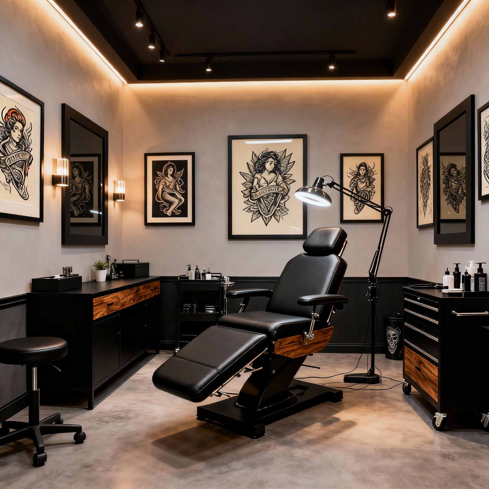
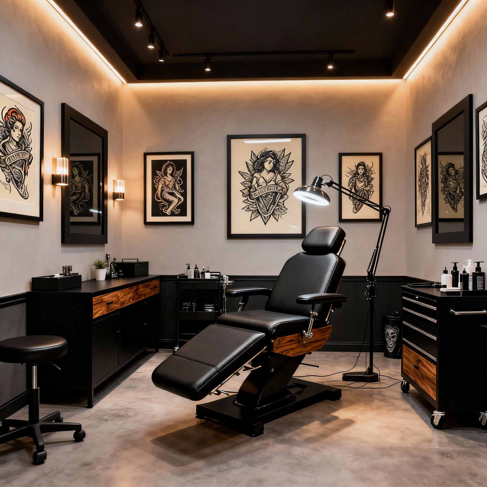
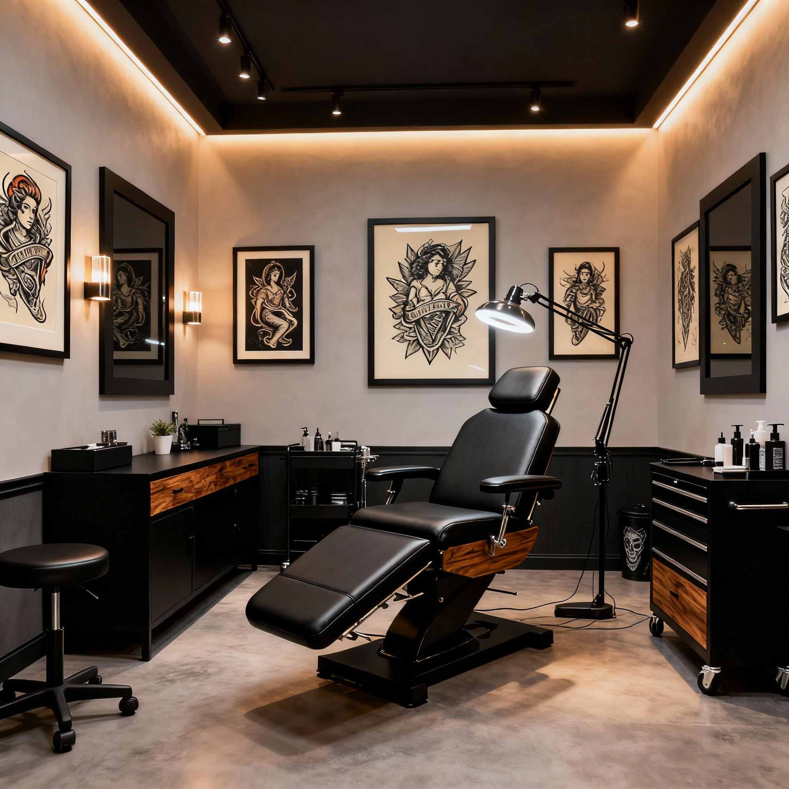

Ink Legacy Tattoo Studio nace en 2015, un estudio en el que Rubén Gómez ha juntado toda su pasión y respeto por el arte urbano del tatuaje en un solo espacio.
En Ink Legacy encontrarás una selección de excelentes tatuadores residentes, así como invitados nacionales e internacionales.
Las cabinas están especialmente cuidadas para tu comodidad con todas las medidas higiénicas necesarias.
Además, disponemos de una selección de obras escogidas cuidadosamente para hacer de Ink Legacy una gran galería que hará tu visita más inspiradora.
Nos puedes encontrar en pleno corazón de Madrid, muy cerca de la Gran Vía Madrileña, en Pizarro, 3.
¡Te esperamos!


NUESTRO EQUIPO
¿TIENES CLARO TU ESTILO?
Ink Legacy reúne una gran variedad de artistas especialistas en su propio estilo, únicos, con muchos años de experiencia y una técnica excepcional.
Cada mes contamos con artistas invitados de todas partes del globo, donde podrás tener la oportunidad de hacerte una pieza única y limitada con el artista sin tener que moverte de Madrid.
Puedes estar al día de las novedades del estudio en nuestro Instagram @inklegacytattoo donde anunciamos diariamente diseños disponibles de nuestros artistas residentes y podrás estar al tanto de los artistas invitados al estudio.
Echa un vistazo a los diseños de nuestros artistas residentes y conocelos a fondo haciendo clic en las imágenes.
"Como mi primer tatuaje grande, la seguridad y la higiene eran muy importantes para mí. En Ink Legacy me sentí cómoda y segura desde el primer minuto. El trato fue súper cercano, resolvieron todas mis dudas y el resultado es una obra de arte que adoro. ¡Totalmente recomendado!"
JAVIER M.
"Una experiencia increíble de principio a fin. Llegué con una idea bastante vaga y el equipo de Ink Legacy la transformó en un diseño espectacular que superó todas mis expectativas. El nivel de detalle y la profesionalidad son de otro nivel. Sin duda, mi estudio de confianza para futuras piezas."
ÁLEX R.
"El ambiente del estudio es genial, muy profesional pero a la vez relajado. Se nota que les apasiona su trabajo. Entendieron perfectamente el significado que tenía mi tatuaje y lo plasmaron en la piel con una técnica impecable. Volveré seguro."
CITAS
¡HAZNOS UNA VISITA!
En Ink Legacy te lo ponemos fácil, solo tienes que ponerte en contacto con nosotros mediante nuestro formulario de contacto especificando tu idea, tamaño, zona a tatuar y artista, si lo tienes claro, si no, nosotros nos encargamos de escoger al profesional que mejor encaja con tu idea y se ajusta al estilo que estas buscando.
Lo que más nos importa en Ink Legacy es hacer tatuajes únicos y con personalidad, como nuestros clientes, ya que valoramos mucho la libertad creativa y la profesionalidad.
¿No lo tienes claro? No te preocupes, escríbenos y cuéntanos qué estás buscando, estaremos encantados de resolver todas tus dudas y hacerte un hueco.
 
